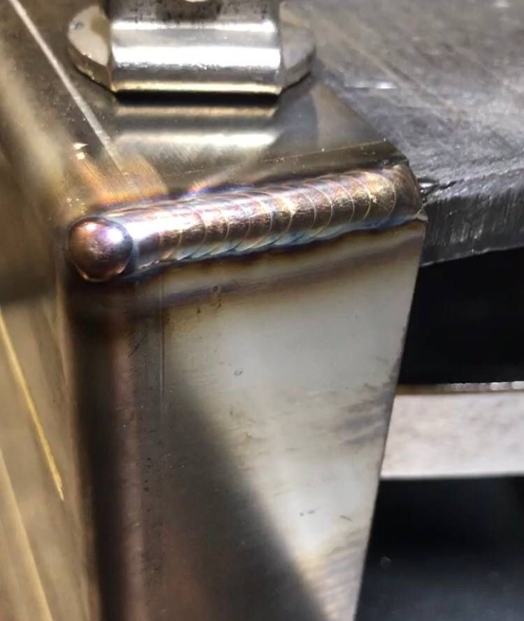
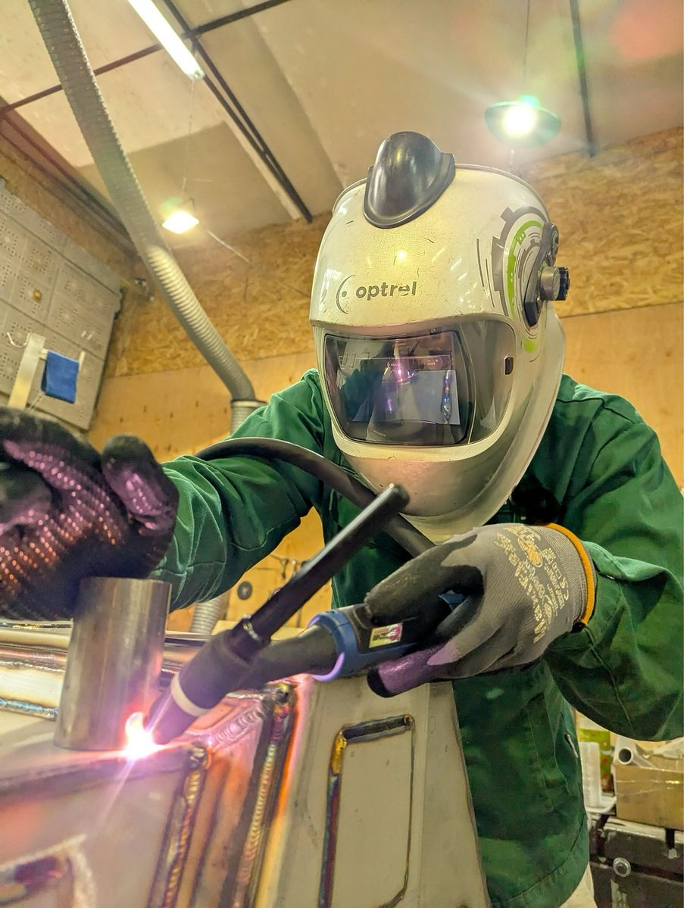

Геометрія шва
TIG-ЗВАРЮВАННЯ / ДЕТАЛІ
+ МАЙСТЕРНЯ TIG-ЗВАРЮВАННЯ / КИЇВ
Метал. Характер. Майстерність.
Ремонтуємо деталі. Втілюємо ваші ідеї.
+ СИЛА В ДЕТАЛЯХ
У кожного металу — свої властивості. У кожної задачі — своє рішення. Від відновлення деталі до виготовлення виробу: працюємо з увагою до форми, функції та шва.
01 / ЩО МИ РОБИМО
ОДНА МАЙСТЕРНЯ. РІЗНІ МОЖЛИВОСТІ.Аргонне зварювання, ремонт
і виготовлення під вашу задачу.
Акуратні з’єднання, для яких важливі і міцність, і вигляд. Труби, баки, деталі та конструкції.
Відновлення тріщин, корпусів і кріплень. Ремонт автомобільних деталей, велосипедів та електросамокатів.
Від окремого кронштейна до металевої конструкції. Зварювання та виготовлення за розмірами або кресленням.

02 / РОБОТИ МАЙСТЕРНІ
БІЛЬШЕ В INSTAGRAMБез зайвих слів.
Просто метал і результат.
TIG-ЗВАРЮВАННЯ / ДЕТАЛІ
ВИГОТОВЛЕННЯ / ЗА РОЗМІРАМИ
ВИГОТОВЛЕННЯ / КОНСТРУКЦІЇ
Показано 3 роботи

03 / ЗА КОЖНИМ ШВОМ — ЛЮДИНА
Хороша робота починається
з розуміння вашої задачі.
Спочатку — огляд, матеріал і призначення деталі. Потім — підготовка та зварювання. Кожен крок має значення для кінцевого результату.
ВІД ЗАДАЧІ ДО ГОТОВОЇ ДЕТАЛІ
ПРОЗОРО. ПОСЛІДОВНО. ПО СУТІ.Надішліть фото, розміри або креслення в Instagram.
Обговоримо можливість ремонту, вартість і терміни.
Підготуємо метал і виконаємо погоджені роботи.
Перевіримо результат і домовимося про передачу.
ПЕРЕД ПОЧАТКОМ
Вартість залежить від матеріалу, пошкодження, обсягу та підготовки. Надішліть фото й короткий опис задачі — майстер зможе зорієнтувати після огляду.
Загальне фото деталі, кілька фото пошкодження зблизька, приблизні розміри та матеріал, якщо він відомий. Для виготовлення — ескіз або креслення.
Можливість ремонту визначається після огляду. Важливі сплав, розташування тріщини та навантаження на деталь. Надішліть фото, щоб обговорити ваш випадок.
У Києві. Точне місце, час візиту та спосіб передачі деталі узгодьте з майстром у повідомленнях Instagram перед приїздом.
04 / ПОЧНЕМО З ВАШОЇ ІДЕЇ
КИЇВ, УКРАЇНАПочніть з фото деталі.
Далі знайдемо рішення разом.